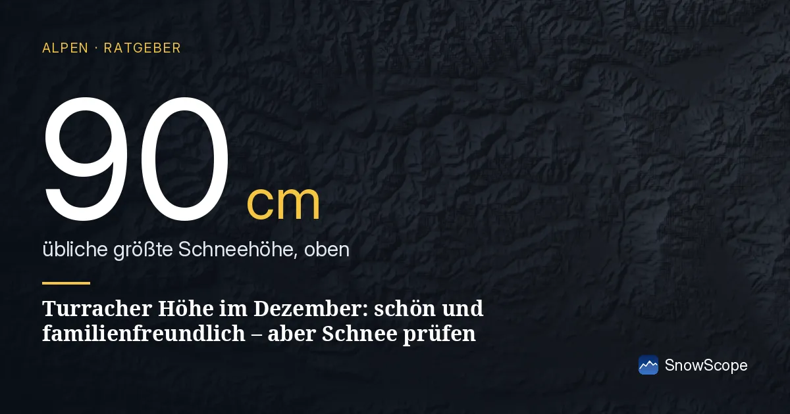
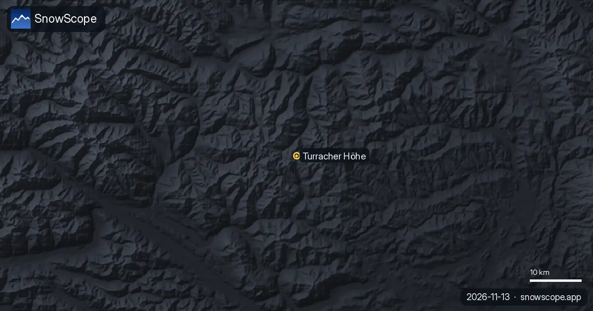

Turracher Höhe im Dezember: schön und familienfreundlich – aber Schnee prüfen
Am typischen 15. Dezember zeigt Turracher Höhe 23 cm Schnee in der Mittellage (1792 m) über 46 Winter hinweg gemessen. Nur 39 Prozent dieser Winter hatten in der Woche 15.–21. Dezember 30 cm oder mehr, was bedeutet, dass Anfang Dezember ein Risiko ist.
Die Live-Schneeprognose für Turracher Höhe in der SnowScope-AppSchneehöhen, Pulverschnee-Alarme und 3D-Karte, gratis.
Die Herausforderung am Tal
Das Dorf liegt auf einem hohen Pass auf 1392 m, und diese Höhe ist der schwache Punkt im Dezember. Über die vergangenen Winter gesehen bringt ein typischer 15. Dezember nur 10 cm im Tal. In der Woche 15.–21. Dezember erreichten nur 4 Prozent der Winter dort 30 cm. Der Schnee kommt spät: der übliche erste Tag mit 30 cm in der Mittellage ist der 22. Dezember.
Die letzten Jahrzehnte zeigen weniger Schnee im Dezemberanfang. Der Anteil der Weihnachtswochen mit 30 cm in der Mittellage fiel von 67 Prozent in den ersten 15 Wintern (1980–81 bis 1994–95) auf 27 Prozent in den letzten 15 (2011–12 bis 2025–26). Der letzte Winter hatte am 15. Dezember in der Mittellage nur 3 cm, also magere Dezember passieren.


Wo fahren, wenn du früh kommst
Die oberen Hänge haben bessere Chancen. Am Top (2193 m) hat ein typischer 15. Dezember 34 cm, und 70 Prozent der Winter erreichten in der Weihnachtswoche 30 cm. Das Gefälle beträgt 801 m über 34 km Pisten und 15 Lifte, also gibt es Platz, um bergauf zu arbeiten und blanke Flächen zu meiden.
Das Skigebiet eignet sich für Familien mit 15 Liften, verteilt über sanftes Gelände. Wenn du vor dem 22. Dezember kommst, plane mehr Zeit in höheren Lagen ein und akzeptiere, dass tiefere Pisten dünn oder gesperrt sein können.
Schneehöhe nach Datum
In der Mittellage verläuft es so: 12 cm am 1. Dezember, 23 cm am 15. Dezember, 26 cm am 24. Dezember, 28 cm am 31. Dezember. Das sind typische Tiefen aus den vergangenen Wintern. In einem schneereichen Jahr (1 von 10) erreicht die Mittellage bis zum 15. Dezember 48 cm. In einem dünnen Jahr nur 4 cm.
Die Spanne zeigt, warum der Dezember hier unsicher ist. Du kannst bis Weihnachten eine anständige Basis finden oder Steine dicht unter der Oberfläche. Das Ganzjahresbild ist bescheiden: ein typisches Höchstwert in der Mittellage liegt bei 67 cm, und Februar ist normalerweise der tiefste Monat, nicht der Dezember.
Preis: Nebensaison bis Heiligabend
Der Liftpass 2026–27 hat Nebensaisontarif vom Öffnungstag bis 24. Dezember, dann Hauptsaison danach. Der Tageskarte für Erwachsene kostet EUR 72,50 in beiden Saisons. Der 6-Tage-Pass kostet EUR 353 in der Nebensaison und EUR 381 in der Hauptsaison, die Ersparnis ist also für eine volle Woche vor Weihnachten, nicht für einzelne Tage.
Buche eine Woche in der Nebensaison und spare EUR 28 bei einem 6-Tage-Pass. Baue Flexibilität in deine Termine ein: Schnee in der Mittellage mit 30 cm kommt durchschnittlich erst um 22. Dezember.
Gletscheralternative zum gleichen Preis
Mölltaler Gletscher liegt in der gleichen Provinz und kostet ungefähr gleich viel. Sein tiefster Lift liegt auf 2103 m mit typischerweise 66 cm am 15. Dezember, und 91 Prozent der Winter hatten in der Woche 15.–21. Dezember 30 cm. Der 6-Tage-Nebensaisonpass kostete EUR 332 auf seiner letzten veröffentlichten Liste (Saison 2025–26).
Im Dezember gewinnt der Gletscher bei Schneehöhe und Ankunftsdatum. Turracher Höhe gewinnt bei Familienatmosphäre und niedrigeren Höhenpisten. Ab Januar wird Schnee in der Mittellage bei Turracher Höhe zuverlässiger.
Tipps für Skifahrer
- Buche eine volle Woche in der Nebensaison (vor 24. Dezember), um EUR 28 bei einem 6-Tage-Pass zu sparen. Vermeide einzelne Tage, es sei denn, Schnee ist bestätigt.
- Wenn du vor 22. Dezember kommst, fahre den obersten Lift. Bei 2193 m hatten 70 Prozent der Weihnachtswochen 30 cm, verglichen mit 39 Prozent in der Mittellage.
- Checke die Schneehöhe eine Woche vor deiner Reise. Magere Dezember kommen vor; der letzte Winter hatte am 15. Dezember in der Mittellage nur 3 cm.
- Plane mehr Zeit drinnen im frühen Dezember. Das Dezemberlicht ist auf dieser Breitengrad kurz, und dünner Schnee kann Schließungen von tieferen Pisten erzwingen.
- Nach einem Sturm abseits der Piste: konsultiere das offizielle Lawinenbulletin vom Lawinenwarndienst Steiermark (lawinen.report).
Zu diesen Zahlen
Die Schneehöhen der Skigebiete sind der meiste Schnee in den oberen Hängen am angegebenen Tag; es sind Schätzungen für eine Fläche, keine Messung an einem Punkt. Prognosen können sich ändern. Lies vor dem Freeriden immer den offiziellen Lawinenlagebericht.
Offizielle Lawinenlageberichte: Lawinenwarndienst Steiermark
Diesen Bericht zitieren
Für Forschung, Lehre oder Presse: Zahlen und Grafiken sind unter CC BY 4.0 mit dieser Quellenangabe frei nutzbar.
SnowScope (2026), Turracher Höhe im Dezember: schön und familienfreundlich – aber Schnee prüfen, https://snowscope.app/blog/de/2026/11/turracher-hoehe-december-skiing-honest-snow-check.html, abgerufen am 2026-11-14
SnowScope (Atlas Labs). (2026, November 14). Turracher Höhe im Dezember: schön und familienfreundlich – aber Schnee prüfen. SnowScope snow reports. https://snowscope.app/blog/de/2026/11/turracher-hoehe-december-skiing-honest-snow-check.html
BibTeX
@misc{snowscope2026turracherhoehedecembersk,
author = {{SnowScope (Atlas Labs)}},
title = {Turracher Höhe im Dezember: schön und familienfreundlich – aber Schnee prüfen},
year = {2026},
month = nov,
howpublished = {\url{https://snowscope.app/blog/de/2026/11/turracher-hoehe-december-skiing-honest-snow-check.html}},
note = {Published 2026-11-14 20:14 UTC; accessed 2026-11-14}
}· CC BY 4.0 · Methoden, Daten und Werkzeuge →
Turracher Höhe: Schnee und Temperatur nach Höhe, dieser Winter vs letzter (Werkzeuge) →
Turracher Höhe folgen
Gratis: eine Nachricht, wenn Neuschnee kommt, und jeden Morgen die Vorhersage.